Rebuilding Paradise: wildfire architecture & designing for adaptive resilience
Summary
As urban habitats and natural landscapes become increasingly intermixed, wildfires that are capable of devastating entire towns and communities have become commonplace in wildland-urban interface areas. This thesis takes a critical relook at wildfire resilience by understanding the wildfire crisis in the Californian context, where the pursuit towards aggressively fortifying urban habitats has become modus operandi. In proposing the alternative premise of wildfire inevitability and reframing the idea of resilience towards one that designs for wildfire-adapted rather than wildfire-resistant communities, this project takes reference to resilient wildfire ecosystems as its architectural design framework.Ultimately, the vision for Rebuilding Paradise brings forward an alternative way of approaching wildfire resilience from an ecological perspective that allows suburban communities and their surrounding ecological systems to coexist synchronously with one another. It is a rebuttal against the typically loss-adverse, hyper-defensive narrative for resilience, proposing instead for an approach of targeted loss and regeneration.
About Me
Wen Qi is a Master of Architecture graduate from the Singapore University of Technology and Design. Her architectural thesis research on wildfire resilience was inspired by her time spent in a summer exchange programme at California, Berkeley, where a course on ecology and an appreciation for California’s natural landscape had provoked her to rethink the relationship between resilience, architectural design and the natural environment.
Name
Ng Wen Qi
Mentor
Peter Ortner
Typology
Community, Residential
Site Location
Paradise, California

![]()
![]()
![]()
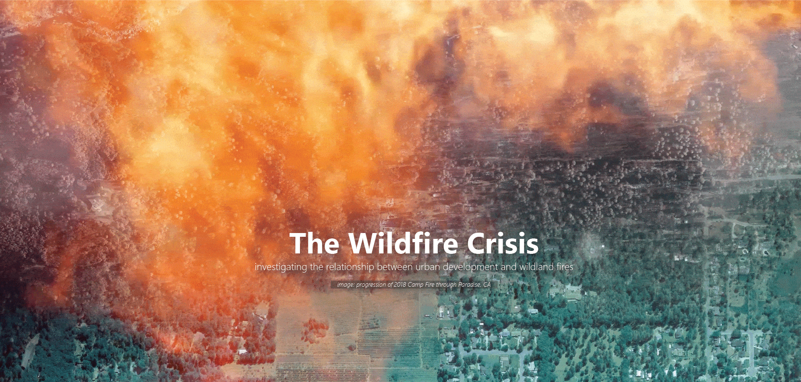
California: A state in flames
From earthquake resistant structures to floating, flood-proof cities, architecture has done it all when it comes to creating built environments able to withstand the unrelenting forces of nature… Or has it? While natural disasters such as hurricanes, floods, and earthquakes have been pondered over with numerous visionary design solutions, wildfires as an equally pertinent environmental challenge has yet to be met with the same level of enthusiasm. To better understand the magnitude of the wildfire crisis, this thesis turns its attention to California, the American state under the highest wildfire risk.The following studies have revealed the worrying trends of California’s wildfire problem - from growing fire magnitude and frequency over the years to an increase in homes built along wildland-urban interface areas, the wildfire problem is a far-reaching one where trends point towards the ineffectiveness of current approaches to wildfire resilience (and in turn the need for an alternative solution).
In particular, suburban communities are currently bearing the brunt of the global wildfire crisis, the very communities which often find themselves financially incapable of recovering effectively after a wildfire. Hence, this thesis will explore the value of building resilience along highly affected, high risk suburban zones, in an endeavour to propose an alternative design solution for the wildfire crisis.
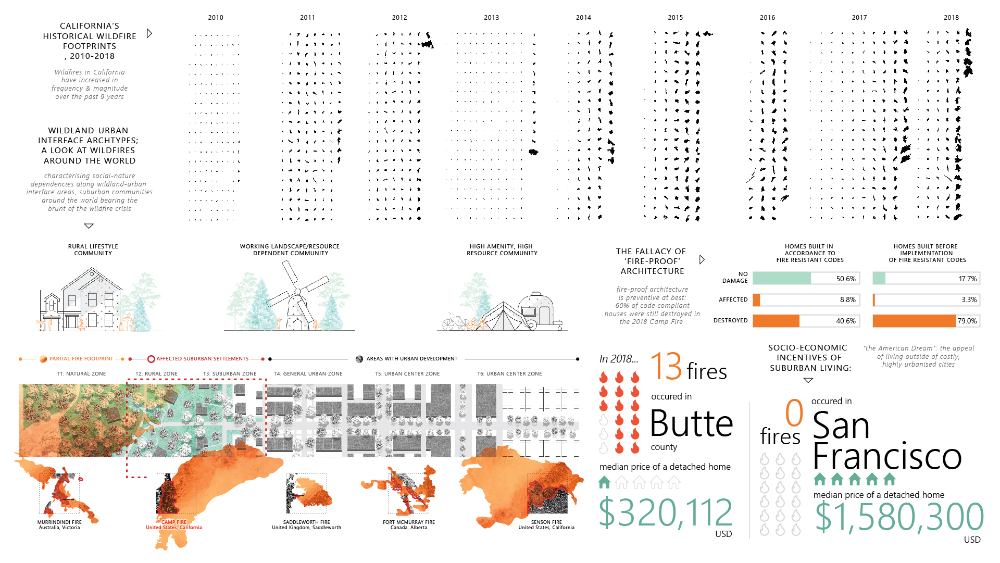
Paradise, CA: 2018 Camp Fire
The 2018 Camp Fire occured during one of California’s hardest hit fire seasons, ravaging through the town of Paradise on November 8th.Leaving 86 deaths and destroying 95% of homes and businesses in its wake, the town which was home to a quiet community of middle and lower income Americans was almost completely decimated over the course of 17 days.
One year on, Paradise’s response towards the aftermath of a wildfire this extensive has revealed the stark inadequacy in disaster recovery for an average American town: even as much of the vegetation has regrown, the rubble of a burnt McDonalds restaurant, the sooted metal of abandoned cars, and a largely displaced population remains. Nature’s resilience has clearly outpaced our own, beckoning the question of what went wrong, and what more can be done in terms of a community’s wildfire resilience.
The wake of the Camp Fire tragedy sets the precedent for this thesis project in attempting to designing for an alternative solution for wildfire vulnerable, suburban towns like Paradise.
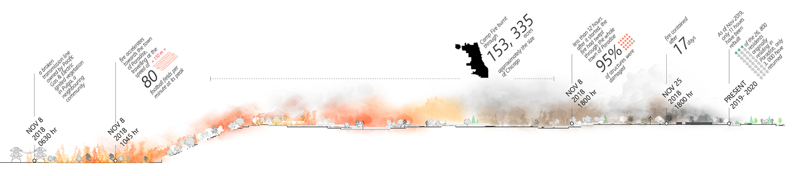
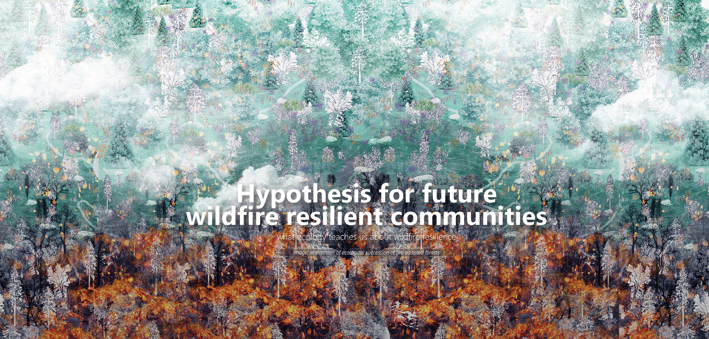
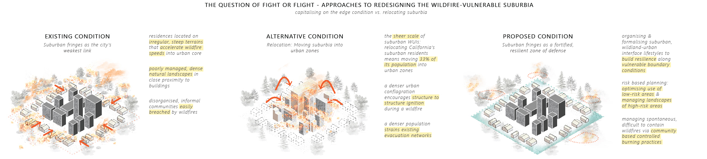
Adaptive Resilience & Ecology
The thesis hypothesis explores the premise of adaptive resilience as an alternative, improved way of designing for future wildfire adapted communities.The notion of adapting to wildfires rather than designing against them is not a novel one: many fire adapted ecosystems around the world through years of evolution have been designed to burn, with some species even depending on or benefitting from wildfires. Considering that they have fared far better than their urban counterparts in surviving fires, there is much to be learnt from ecology when it comes to urban resilience. By combining the idea of redesigning architecture for wildfire resilience and learning from fire-adapted ecosystems, this project seeks to tap on the lessons learnt from resilient wildfire ecosystems and translate it into an architectural design framework.
The idea was then to translate these mechanisms that provide ecosystems with the ability to sustain fires into architectural features with the implementation of design, material choices, and technology. For example, a fire-resistant bark is translated architecturally as a concrete fireproof core, high moisture content in a plant’s leaves is translated into the design of a water containing façade system, nutrient storing roots can be applied into off grid rainwater harvesting and solar power storage utilities, and so on.
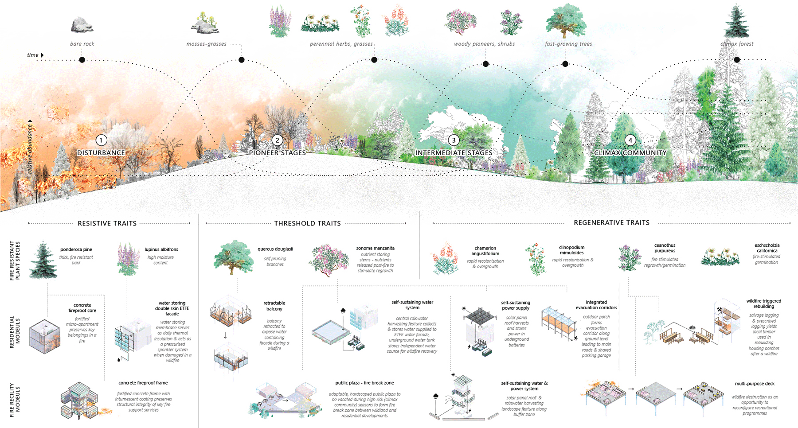
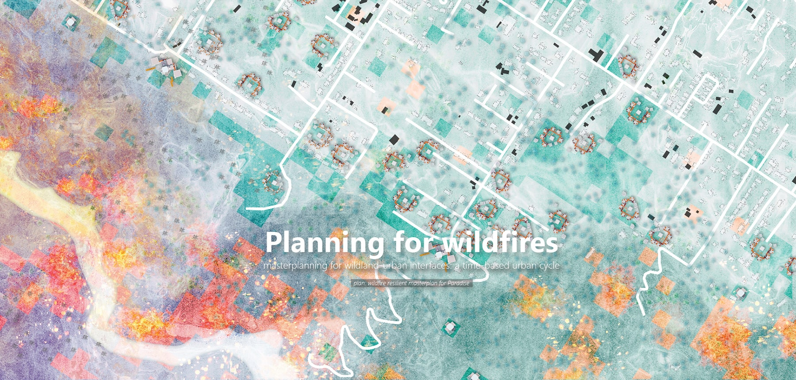
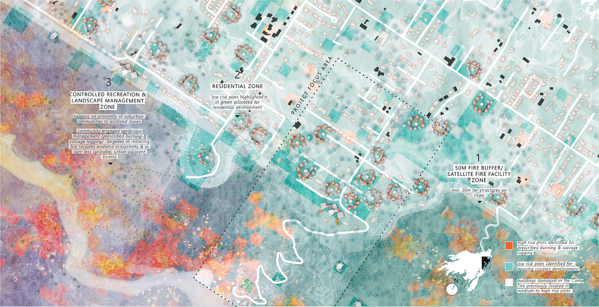
Urban planning for the future wildfire adapted community
To begin on the urban scale, wildfire risks were analysed across gridded plots based on fire history, vegetation density, and topography data. Blue areas represent low risk plots proposed for development, whereas red areas represent high risk plots in need of targeted landscape treatment.Narrowing on a suburban site, the initial point of breach for Camp Fire was chosen, with the same risk analysis ran across a finer resolution of 50 x 50m plots. By identifying urban areas as low and high risk zones, it provides an opportunity to plan for a redistributed urban density whereby the bulk of buildable, habitable areas are located in low wildfire risk areas.
Following time cycles of the ecological model, the masterplan takes on a phased approach, designing for residential and fire facility typologies as replicable models along Paradise’s suburban fringes. Key master planning ideas are illustrated above that are employed during specific stages of the wildfire cycle.
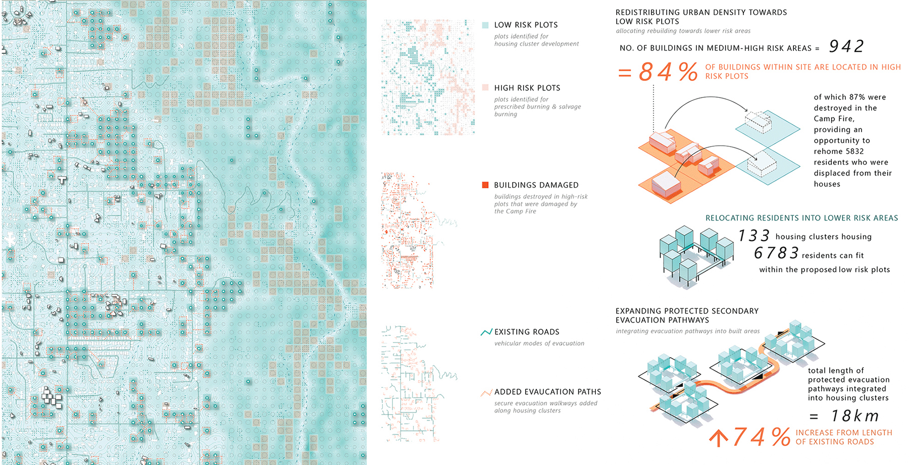
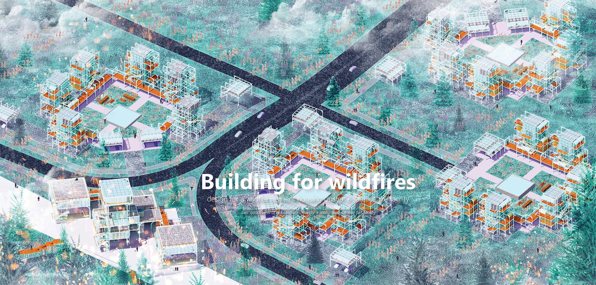
Housing Design: a strategically vulnerable model
Each housing block comprises of a highly fire-resistant, concrete housing core that protects key belongings in a wildfire. The core is protected by double skin ETFE water containing façade supplied by an underground water storage system. This forms the resistive element of the design. Exposed concrete frames are constructed around the core, providing structural support for semi outdoor living spaces. These are constructed using fire perishable materials designed to be rebuilt and reconfigured after a wildfire, forming the regenerative part of the design.Each housing design feature (see section drawing below) serves a function that corresponds to the three types of ecological mechanisms (identified in the thesis hypothesis), and six housing blocks form a cluster community that function collectively as a resilient unit modelled after fire adapted ecosystems. Over time, the housing system, like ecological systems, will undergo a cycle of wildfire disturbance and recovery.
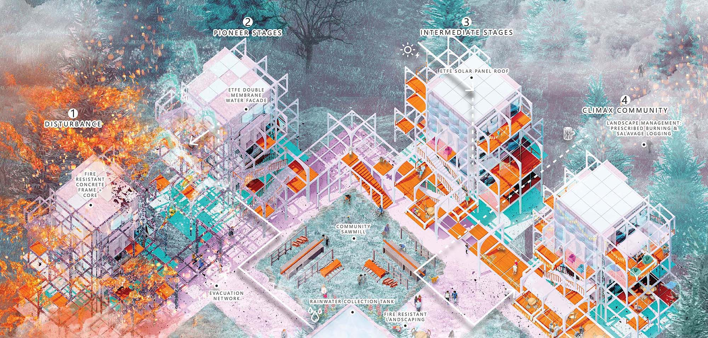
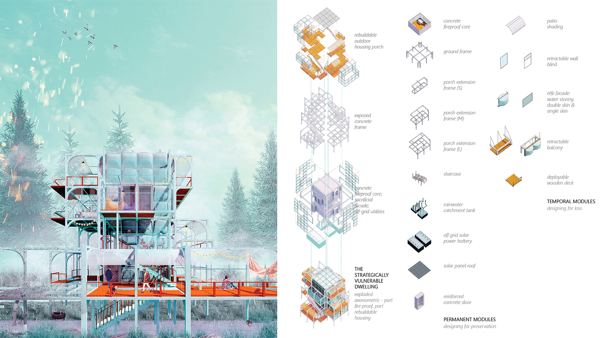
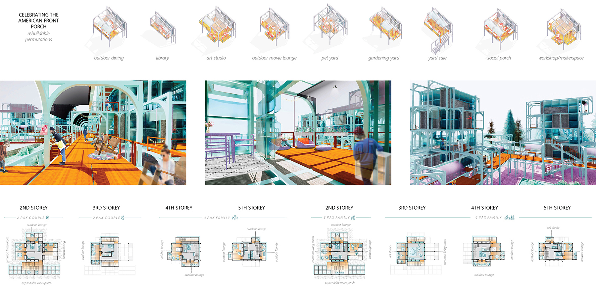
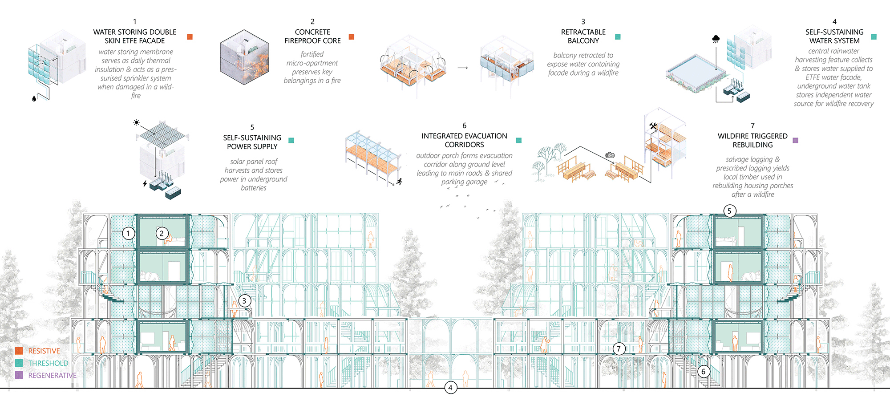
Satellite Fire Facility Design: accomodating for seasonally adaptable spaces
The design of the satellite fire facility is aimed at supporting wildfire response along suburban fringes, while also providing a low risk venue for suburban recreation. Built on an open plaza paved with fire resistant, permeable hardscape, the complex is connected by three lift cores and three stair cores providing access to the flexible programmatic decks as well as the administrative core where fire planning offices and control tower is located.The design is focused on an architecture that can support seasonally specific programmes across wildfire phases, where use cases shift from primarily recreational to fire support functions as needed. Similar to the housing model, modules are designed to mirror resilient ecological mechanisms, with key features reflecting either resistive, adaptive or regenerative mechanisms.
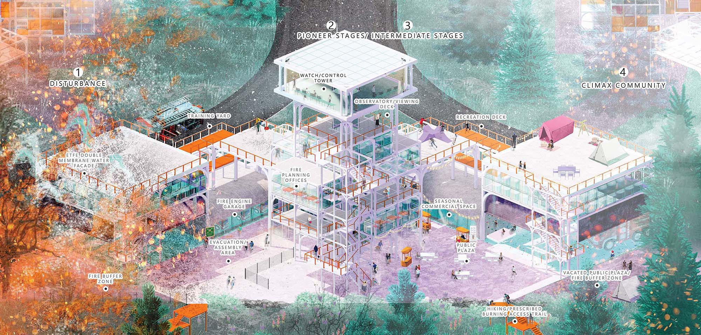
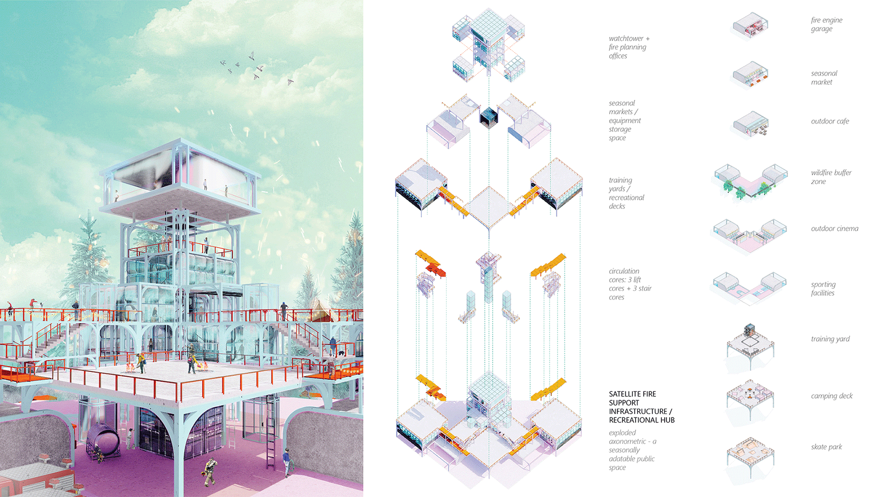
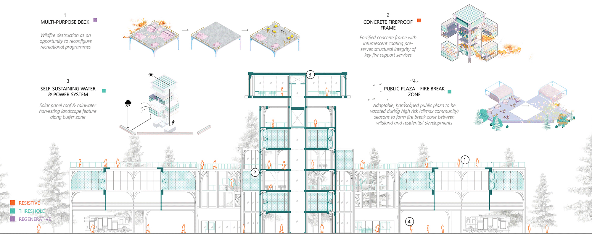
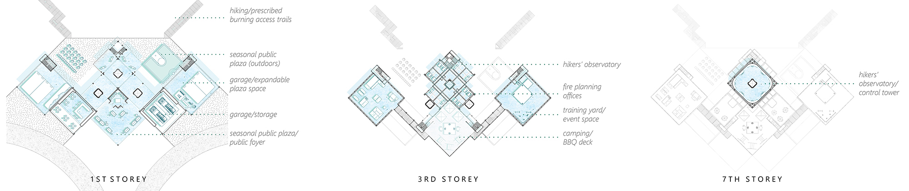
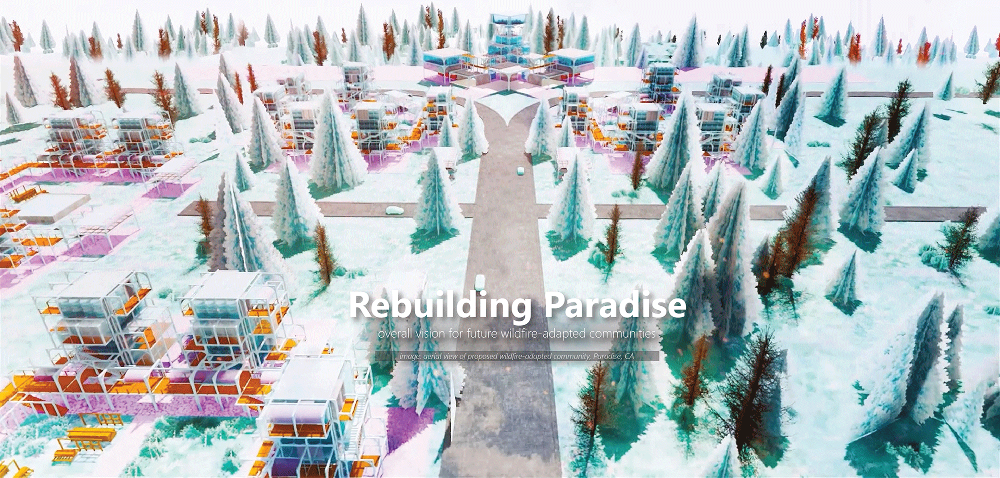
Paradise as a prototype: Urban sucession model vs. Ecological sucession model
[Click image on the right to view project video]In conclusion, by questioning the fundamental ideas of resilience and the reflexive approach of recouping and rebuilding after a destructive loss, the thesis navigates the alternative premise of embracing the cycle of destruction as opportunities for adaptability and growth as the more constructive way forward, not just in California but in other wildfire-striken communities all over the world. It proposes a solution rooted in ecologically resilient systems, and a way of design that by working with rather than against nature, communities can be designed in a way which mediates the relationship between our built environment and forces of nature.
The final drawing below illustrates the urban succession system proposed for Rebuilding Paradise, and the parallels it shares with fire adapted, resilient ecosystems.
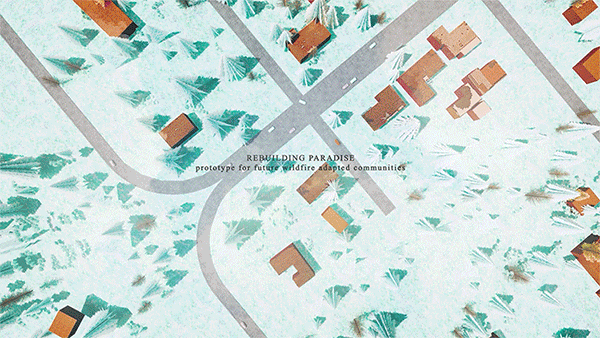
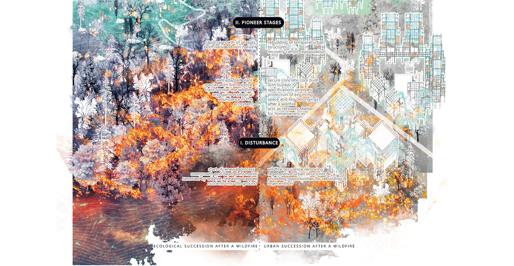